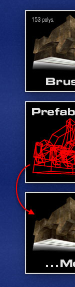
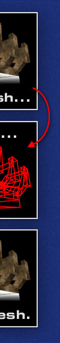

What is MeshMaker?MeshMaker is a Windows-based Unreal and Unreal Tournament editing tool that makes converting UnrealEd brushes (or, more precisely, prefabs) to decoration actors a matter of seconds. Have a look at the MeshMaker walkthrough to find out how it works. Why Meshes?Meshes (or, for our intents and purposes, decoration actors) have some advantages over brushes where it comes to detail work:
But it's not all sunshine, of course. The advantages mentioned above come at a cost:
Download and InstallationMeshMaker is available for download as an automatic Umod installer and a simple Zip archive. Both versions contain the same files; they just differ in installation convenience.
A note for webmasters: Please don't link to the individual downloads themselves; link to this page instead. The download locations might be changed or removed without prior notice. Conversion DetailsThe converted prefabs retain their original size and orientation. Same applies to most static surface properties: Translucent, modulated, masked, unlit, two-sided, and non-smoothed. Mirror surfaces aren't supported by meshes, but MeshMaker converts mirror surfaces to environment-mapped mesh faces; it's a nifty effect, try it out. Common Pitfalls and Limitations
If something doesn't work for you that should work for you, it might be a bug. If you find a bug or some strange behavior that you suspect to be a bug, send me an email at mychaeel@planetunreal.com. Please try to provide as much information as possible; bug reports to the effect of "it doesn't work and you suck" are worthless and will be discarded. Same applies to suggestions. I'm open for any suggestions you might have; I can't promise that I'll implement every suggested feature, but I'll definitely consider it. Copyright and AcknowledgementsMeshMaker is © 2001 by Mychaeel mychaeel@planetunreal.com. Free for noncommercial use. For any other use and distribution, please contact me in advance. Thanks. Kudos go to the following individuals and organizations: Antonio Cordero, whose excellent (and free) Delphi unit for Unreal package access saved me an insane amount of research and coding; David Townsend from Legend Entertainment for publishing the source code of the 3ds2unr tool, which provided me with vital information about Unreal's mesh format; Exodus-R from the BeyondUnreal Editing forums for publishing a thorough listing of possible face flags in Unreal meshes; and last but not least my beta testers, ElBundee and WillySurvive. Oh, and really last but definitely not least the nice folks from BeyondUnreal's Editing forums that offered kind encouragement when I asked whether a tool like MeshMaker might be useful. |
 | |||||||||||||||||||